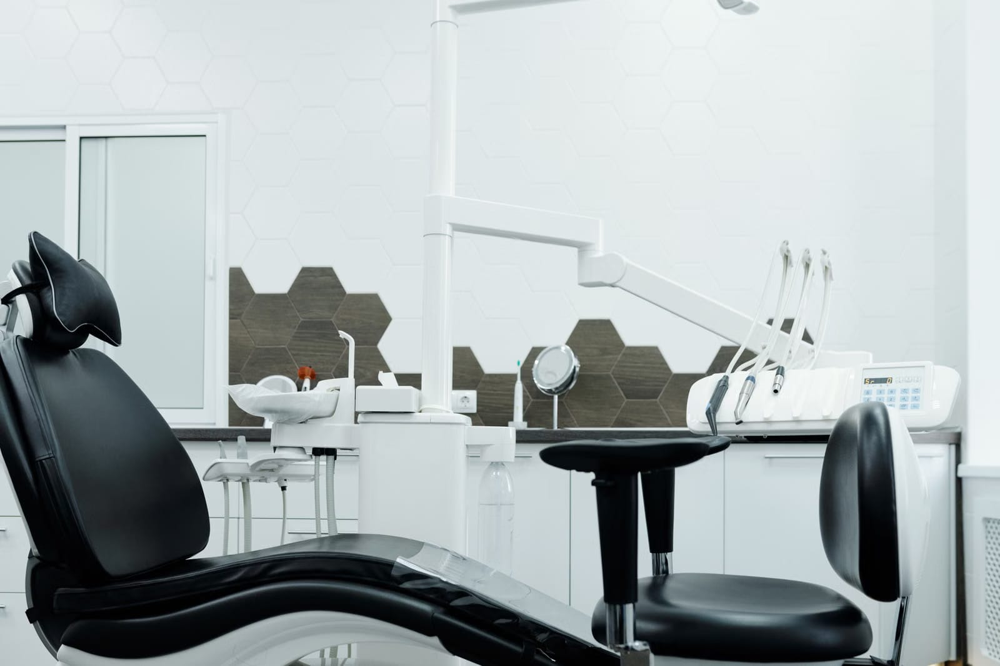
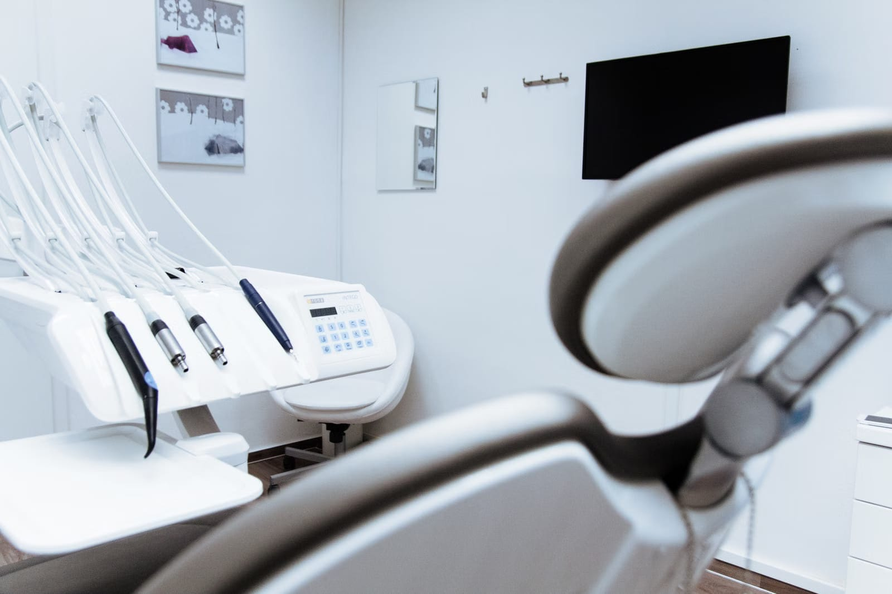
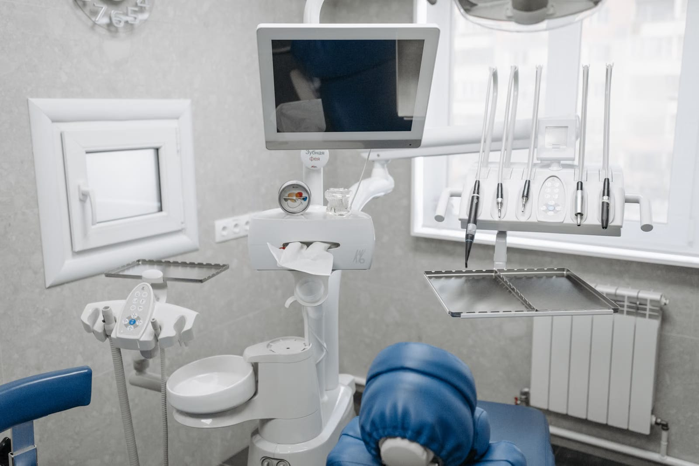

Ağız ve Diş Sağlığı Polikliniği

Aşık Veysel Caddesi'ndeki polikliniğimizde muayeneden implanta, dolgudan ortodontiye kadar ağız ve diş sağlığınız için bir aradayız. Pazartesiden cumartesiye 09:00–21:00 açığız.
Hangi tedavinin size uygun olduğuna muayeneden sonra, seçenekler anlatılarak birlikte karar verilir.
Ağız ve diş muayenesi, gerekirse röntgen ve tedavi planı.
Çürük dokunun temizlenip dişin onarılması.
Diş içindeki iltihabın temizlenip kanalların doldurulması.
Diş çapraşıklığı ve kapanış bozuklukları için tel tedavisi.
Eksik dişlerin yerine çene kemiğine yerleştirilen yapay kök.
Diş rengine yakın, metal desteksiz kaplama seçeneği.

Tedaviye başlamadan önce durumunuz ve seçenekleriniz açıkça anlatılır.

Gelmeden önce arayarak randevu almanızı rica ederiz.
© 2026 Dişhanı Ağız ve Diş Sağlığı Polikliniği · Küçükçekmece